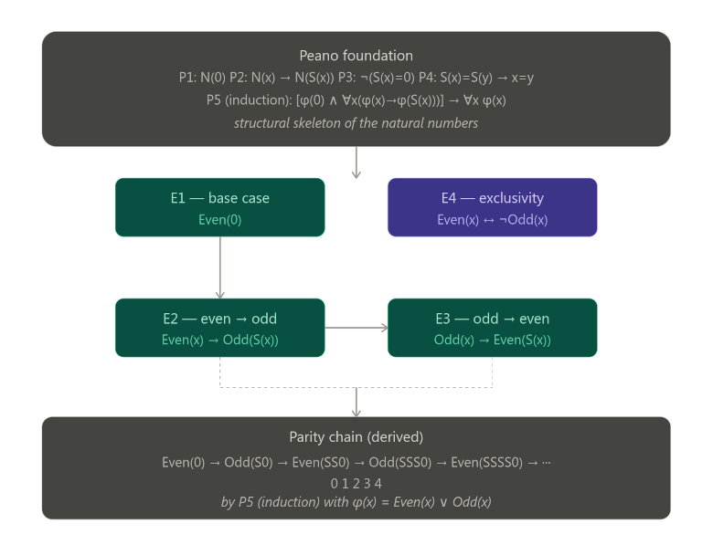

Parity in first-order logic via Peano’s Axioms
The Foundation: Peano’s Axioms (relevant subset)
We work in a signature with a constant \(0\), a unary successor function \(S\), and two predicates we will define: \(\text{Even}(x)\) and \(\text{Odd}(x)\).
⥤ Now a quick in situ math holiday to explain what is meant by a signature
In mathematical logic, a signature (also called a vocabulary or language) is simply the inventory of symbols you declare before writing any formulas. It tells you what the non-logical building blocks of your theory are, sorted into three kinds:
- Constants — named individuals, here just `0`
- Function symbols — operations that take arguments and return a term, here `S` (which takes one argument, making it “unary”)
- Predicate symbols — relations that take arguments and return true/false, here `Even` and `Odd`
The signature is essentially the type signature of your theory before any axioms are stated. It says nothing about what these symbols mean — that is the job of the axioms. The signature just declares that these symbols exist and how many arguments each one takes (this is called the arity).
So when we say, “We work in a signature with…”, it is doing the same thing a programmer does when declaring types or interfaces before writing any logic: establishing the alphabet of the formal language within which all the subsequent formulas will be written.
In more formal presentations you will sometimes see this written as a tuple like \(L = ⟨0, S, Even, Odd⟩\) or broken into \(L = ⟨{0}, {S/1}, {Even/1, Odd/1}⟩\) where the \(/1\) denotes arity 1. Below, the axioms P1–P5 and E1–E4 are then all formulas in this language L, and any model of the theory is a set together with an interpretation of each symbol in \(L\) that satisfies all the axioms.
The natural numbers are the smallest set closed under these axioms.
- P1 — Zero is a natural number: \(N(0)\)
- P2 — Successor closure: \(\forall x\,[\,N(x) \rightarrow N(S(x))\,]\)
- P3 — Zero is not a successor: \(\forall x\,[\,\neg(S(x) = 0)\,]\)
- P4 — Successor injectivity: \(\forall x\,\forall y\,[\,S(x) = S(y) \rightarrow x = y\,]\)
- P5 — Induction schema: for any predicate \(\varphi\) \[ \bigl[\,\varphi(0) \;\wedge\; \forall x\,(\varphi(x) \rightarrow \varphi(S(x)))\,\bigr] \;\rightarrow\; \forall x\,\varphi(x) \]
Defining Even and Odd by Structural Recursion
Rather than importing division or multiplication, we define parity purely in terms of the successor structure. These four axioms are the core of the “algorithm”:
- E1 — Zero is even: \[ \text{Even}(0) \]
- E2 — Odd is the successor of even: \[ \forall x\,[\,\text{Even}(x) \rightarrow \text{Odd}(S(x))\,] \]
- E3 — Even is the successor of odd: \[ \forall x\,[\,\text{Odd}(x) \rightarrow \text{Even}(S(x))\,] \]
- E4 — Parity is exhaustive and exclusive: \[ \forall x\,[\,N(x) \rightarrow (\text{Even}(x) \leftrightarrow \neg\,\text{Odd}(x))\,] \]
Axiom E4 is derivable from E1–E3 plus induction, but stating it explicitly makes the system self-contained without needing to invoke P5 at the object level.
Derived Theorems
From these axioms alone, by applying P5 (induction) with \(\varphi(x) = \text{Even}(x) \vee \text{Odd}(x)\):
| Numeral | Term | Derivation | Parity |
|---|---|---|---|
| \(0\) | \(0\) | E1 directly | Even |
| \(1\) | \(S(0)\) | E2 applied to E1 | Odd |
| \(2\) | \(S(S(0))\) | E3 applied to row above | Even |
| \(3\) | \(S(S(S(0)))\) | E2 applied to row above | Odd |
| \(4\) | \(S^4(0)\) | E3 applied to row above | Even |
| \(\vdots\) | \(\vdots\) | \(\vdots\) | \(\vdots\) |
To “test” whether a concrete numeral \(n\) is even, unfold its \(S\)-chain and apply E1–E3 alternately: parity is read off at the end. This is the FOL analogue of the recursive algorithm:
isEven(0) = true isEven(n) = isOdd(n - 1) isOdd(0) = false isOdd(n) = isEven(n - 1)
Axiom Structure Diagram

A Note on Completeness
This system is complete for parity testing in the following sense: for any closed term \(t\) built from \(0\) and \(S\), exactly one of \(\text{Even}(t)\) or \(\text{Odd}(t)\) is provable, and which one is determined in a finite number of steps equal to the value of \(t\). It is, in this sense, a decision procedure—just expressed as logical derivation rather than as a loop or conditional branch.
The deep connection to computation is that E1–E3 are essentially the definition of a two-state finite automaton:
- States: \(\{\text{Even},\, \text{Odd}\}\)
- Start state: \(\text{Even}\)
- Transition: flip state on every application of \(S\)
\[ \text{Even} \xrightarrow{S} \text{Odd} \xrightarrow{S} \text{Even} \xrightarrow{S} \text{Odd} \xrightarrow{S} \cdots \]
Peano induction (P5) is what guarantees the automaton terminates and covers every natural number.
Signatures, Agda, and First-Order Logic
What a Signature Is in FOL
In classical first-order logic, a signature (also called a vocabulary or language) is the declared inventory of non-logical symbols, sorted into three kinds:
- Constants — named individuals, e.g. \(0\)
- Function symbols — operations returning a term, e.g. \(S\) (arity 1)
- Predicate symbols — relations returning true/false, e.g. \(Even\), \(Odd\)
Formally one writes this as a tuple
\[ L \;=\; \langle\, \{0\},\; \{S^{(1)}\},\; \{\text{Even}^{(1)},\, \text{Odd}^{(1)}\} \,\rangle \]
where the superscript denotes arity. The signature says nothing about meaning; that is the job of the axioms. It is purely the alphabet of well-formed terms and formulas.
The Agda Analogue
Agda is a dependently typed programming language and proof assistant. It does not have a separate notion called “signature”, but the same conceptual job is done — in a richer way — by a combination of language features.
Constants become values or constructors
In FOL the constant \(0\) is simply declared to exist. In Agda you give it
a type, and it exists as the first constructor of the ℕ data type:
data ℕ : Set where
zero : ℕ
suc : ℕ → ℕ
This single block does the work of both the FOL signature entry for \(0\)
(and \(S\)) and axioms P1 and P2 simultaneously. The declaration is not
separate from the meaning — the constructors zero and suc are the
canonical proof that these things exist.
Function symbols become typed function declarations
In FOL, \(S\) is declared as a unary function symbol in the signature, with no further content. In Agda, every function must be given a full type:
suc : ℕ → ℕ
The type ℕ → ℕ plays the role of the arity annotation \(S^{(1)}\), but it
is strictly more informative: it states the domain and codomain, not
just a count. In a dependently typed setting the type can express
arbitrarily rich constraints that FOL arity cannot.
Predicate symbols become types (propositions-as-types)
This is where the deepest difference lies. In FOL, \(\text{Even}\) is a
predicate symbol declared in the signature; its meaning is given by axioms
E1–E3 and a model. In Agda, under the
propositions-as-types (Curry–Howard) correspondence, a predicate is a
function into Set (the universe of types):
data Even : ℕ → Set where
even-zero : Even zero
even-suc : ∀ {n} → Odd n → Even (suc n)
data Odd : ℕ → Set where
odd-suc : ∀ {n} → Even n → Odd (suc n)
A value of type Even n is not merely a truth value — it is a
proof object, a concrete witness that n is even. The FOL axioms
E1, E2, E3 have become the constructors even-zero, even-suc, and
odd-suc. There is no separate axiom layer; the constructors carry the
content directly.
Side-by-Side Comparison
| Concept | FOL signature + axioms | Agda |
|---|---|---|
| Constant \(0\) | Symbol declared in \(L\); P1 axiom | Constructor zero : ℕ |
| Function \(S\) | Symbol \(S^{(1)}\) in \(L\); P2 axiom | Constructor suc : ℕ → ℕ |
| Predicate \(Even\) | Symbol \(\text{Even}^{(1)}\) in \(L\) | Type family Even : ℕ → Set |
| Axiom E1 | \(\text{Even}(0)\) | Constructor even-zero : Even zero |
| Axiom E2 | \(\forall x[\text{Even}(x) \rightarrow \text{Odd}(S(x))]\) | Constructor odd-suc : Even n → Odd (suc n) |
| Axiom E3 | \(\forall x[\text{Odd}(x) \rightarrow \text{Even}(S(x))]\) | Constructor even-suc : Odd n → Even (suc n) |
| Axiom P5 (induction) | Separate schema over all \(\varphi\) | Built into data recursion and structural induction |
| Proof of \(Even(2)\) | Derivation: E1 then E3 | Term: even-suc (odd-suc even-zero) |
| Excluded middle | Assumed (classical FOL) | Not assumed; must be proved or postulated |
The Key Conceptual Differences
Separation vs. fusion
In FOL, the signature and the axioms are strictly separated. The signature
declares symbols; the axioms constrain them. You could in principle
interpret \(\text{Even}\) as any unary predicate and check whether it
satisfies the axioms. In Agda, declaration and meaning are fused: writing
the data block simultaneously introduces the type, its constructors, and
the induction principle. There is no room for an “unintended model”.
Arity vs. type
FOL records only a natural number (the arity) for each symbol:
\(S^{(1)}\) means “takes one argument”. Agda records a full dependent
type. For the simple Peano case the difference is small — suc : ℕ → ℕ
carries little more than arity 1 does. But for richer theories the
difference is enormous: an Agda type can enforce that a function only
accepts even numbers, or that a vector has a specific length, in a way
that a bare arity annotation cannot.
Truth values vs. proof objects
In FOL, \(\text{Even}(4)\) is a proposition — a sentence that is either
true or false in a given model. In Agda, Even 4 is a type, and to
assert it you must produce a term of that type:
#+BEGIN_SRC agda proof-4-even : Even (suc (suc (suc (suc zero)))) proof-4-even = even-suc (odd-suc (even-suc (odd-suc even-zero))) \end{SRC}
The proof is not a certificate attached to a truth value — it is the value, in the sense of the Curry–Howard correspondence:
\[ \text{propositions} \;\longleftrightarrow\; \text{types} \qquad \text{proofs} \;\longleftrightarrow\; \text{terms} \]
Classical vs. constructive logic
FOL as standardly used is classical: the law of excluded middle \(\varphi \vee \neg\varphi\) holds for free. Agda is constructive by default. The statement
\[ \forall n,\; \text{Even}(n) \vee \text{Odd}(n) \]
is an axiom schema in the FOL treatment (derivable from E1–E4 plus P5). In Agda it must be proved by explicit recursion:
parity : ∀ (n : ℕ) → Even n ⊎ Odd n
parity zero = inj₁ even-zero
parity (suc n) with parity n
... | inj₁ e = inj₂ (odd-suc e)
... | inj₂ o = inj₁ (even-suc o)
Here ⊎ is the disjoint sum type (the constructive reading of “or”),
and each branch of with provides a concrete witness. The FOL induction
schema P5 has become the structural recursion on n that Agda’s
termination checker verifies automatically.
Summary
The FOL notion of a signature is the declared interface of a theory — a minimal, meaning-free list of symbols and arities. Agda collapses this interface into the type system itself: every symbol carries a type, constructors encode axioms, and proofs are first-class computational objects. The price is that Agda demands more from the user (explicit proof terms, constructive witnesses); the gain is that the type checker enforces consistency, making an unintended model impossible by construction.